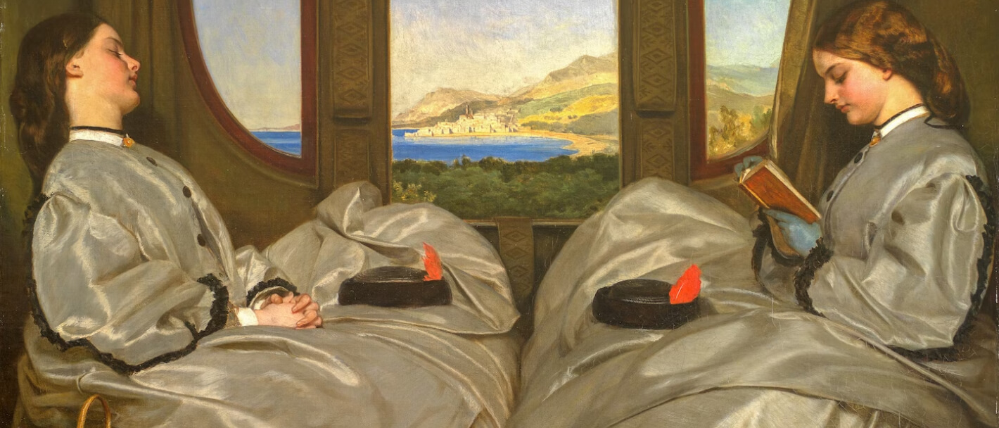
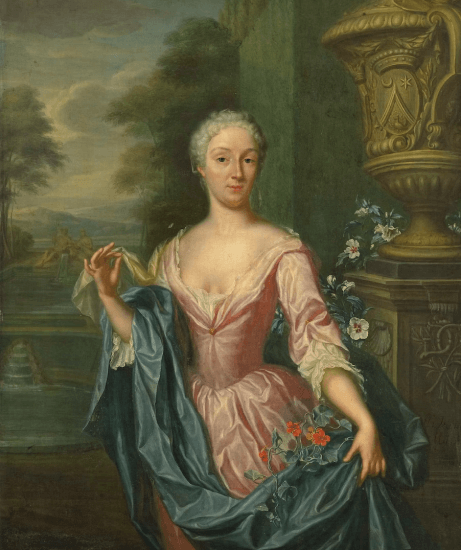

Искусство как тенденция отношения к себе и к образу жизни

19.01.2023

1 034

5 мин

Во все времена искусство служило отражением духа современности. На полотнах художников эпохи Высокого Возрождения мы видим библейские сюжеты. Живописцы часто обращаются к мифам, аллегориям, в их картинах скрыты глубокие смыслы, завуалированные в определенных образах.
Что нам может сказать искусство в отношении образа жизни людей, изображенных на картинах, и какие сведения о ценностях и нравах разных поколений мы можем почерпнуть? Рассмотрим этот вопрос применительно к представителям молодежи.
Например, античное искусство фокусируется на изображении героев Олимпийских и Пифийских игр – юношей эфебов. Это гордость и лицо нации. Они прекрасно сложены, и, разумеется, мы можем вообразить, какой образ жизни ведут эти юноши. Вероятно, его можно охарактеризовать как то, что сейчас принято называть ЗОЖ, – конечно, с поправкой на ценности и нравы того времени.
Переместимся в Россию XVIII века

Живопись середины XVIII века
В 2021 году состоялась выставка Дмитрия Григорьевича Левицкого, на которой были представлены портреты семи выпускниц Смольного института благородных девиц.
Это прекрасные, утонченные и изысканные юные девушки, которым уготовано стать фрейлинами при дворе августейших особ.
Мы видим, что среди их интересов – театр, музыка и наука. И, конечно, немало внимания к своему внешнему виду.
При взгляде на картины можно сделать вывод, что все девушки были красавицами и не испытывали проблем в уходе за своей внешностью.
Но на самом деле, красота того времени требовала жертв, ведь в моде была белая кожа и совсем легкий румянец.
Для этого девушки использовали свинцовые белила, порошок из натурального жемчуга, размоченного в уксусе.
А с прыщами боролись с помощью селитры. Её заворачивали в ткань и прикладывали к воспаленному месту.
Не слишком гуманно по нынешним меркам, но тогда это считалось эффективным.
Хорошо, что сейчас есть возможность использовать адекватные средства для борьбы с прыщами.
Таким средством является Метрогил® А – он уменьшает количество воспалений, воздействуя на причину болезни, а кроме того, хорошо впитывается и не оставляет следов.
Теперь переместимся ближе к современности
Скульптура советского времени
На одном из плакатов двадцатых годов прошлого века красуется стихотворение Александра Дейнеки:
Работать, строить и не ныть!
Нам к новой жизни путь указан.
Атлетом можешь ты не быть,
но физкультурником – обязан.
Творчество советских художников 1920–1930-х годов пропагандирует идею спорта и здорового образа жизни. Дейнека является своеобразным рупором этого течения. На его картинах изображены спортсмены, футболисты и простые люди в контексте занятий физкультурой.
Сам Дейнека с детства занимался спортом. В студенческие годы увлекался волейболом и боксом. Поэтому то, что он изображал на своих картинах, было не только идеологическим вектором, но и его личным опытом.
Если говорить об отношении человека к своей внешности, то мы видим, что в моде естественность и никакого макияжа. Конечно, отчасти это обусловлено непростыми условиями жизни женщин в России начала XX века, но искусство все-таки является отражением общественных норм и морали. А использование косметики порицалось даже советскими девушками.
Разные времена и нравы диктуют разное отношение человека к самому себе. В конечном счете важно не то, пользуетесь ли вы декоративной косметикой в больших количествах или предпочитаете обходиться вообще без нее, а то, насколько вы чувствуете себя здоровым человеком.
Литература:
- Волкова П. Мост через бездну. Великие мастера. – Москва: Издательство АСТ, 2021.
- Брагинский Д.Ю. Спортивные мотивы в отечественном искусстве 1920–х 1930-х годов // Текст научной статьи по специальности «Искусствоведениеискусствоведение».